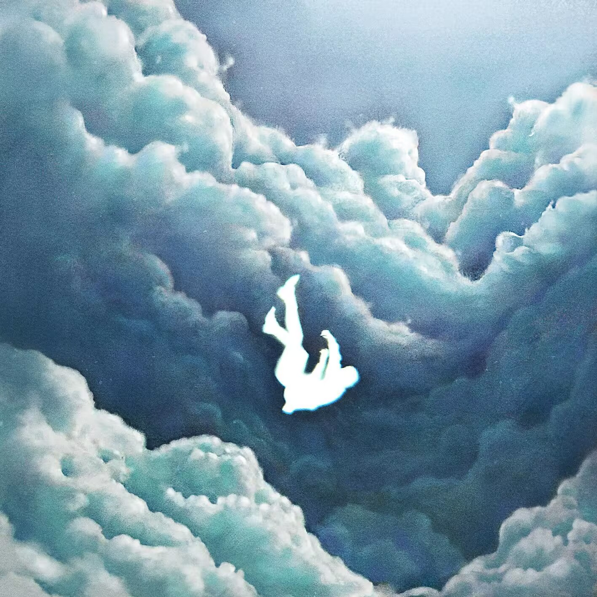
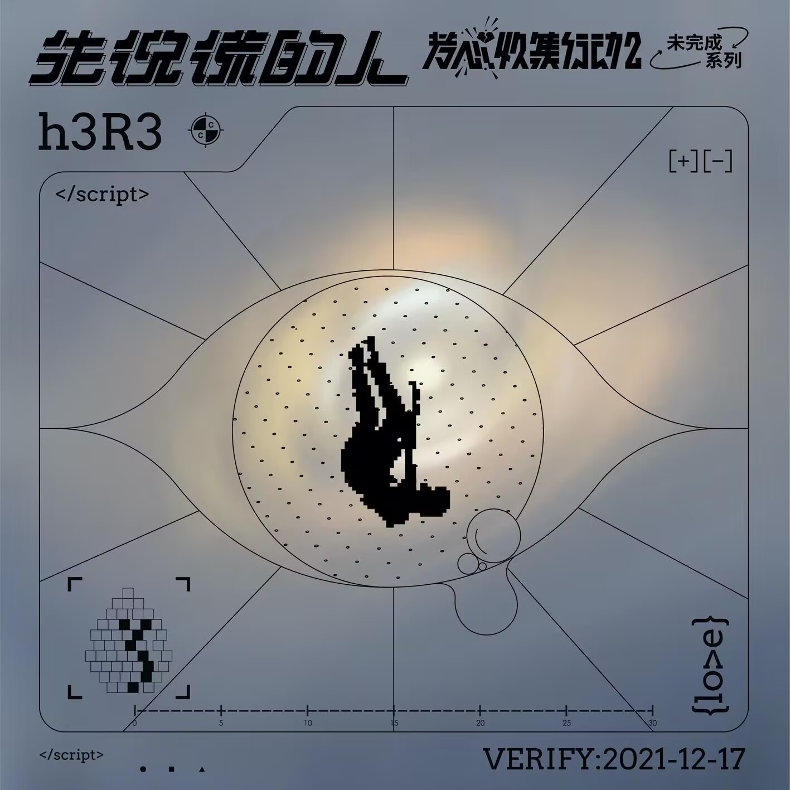

| 刘清云（h3R3） |
点击右方专辑照片欣赏歌曲
|
 |
 |
|---|
刘清云，艺名 h3R3，出生于安徽，中国内地男歌手、音乐制作人，同时是词曲作者、编曲师、混音师、录音师和母带工程师。这个身份清单看起来像个 "技术工种"，但对刘清云来说，这是他这个人的核心特征：他几乎一个人就能完成一首歌的全套制作流程。网易云音乐抖音百科 2018 年，他以 h3R3 为艺名开始活跃，陆续发布单曲，但一直处在 "歌有人听、人没人识" 的状态。真正的转折发生在 2020 年 5 月，他与高旭（Felix Bennett）合作《他只是经过》，上线三个月总播放量超过 1.2 亿，单日最高突破 1200 万，连续两周在网易云音乐飙升榜、热歌榜占据首位。抖音百科那段旋律几乎成了一代人的集体记忆，却很少有人能准确说出演唱者的名字，"歌红人不红" 也成了贴在他身上最久的标签。 2021 年，他的创作进入密集期。与林达浪合作的《还是会想你》上线后迅速刷屏，获评网易云音乐年度瞩目单曲，他本人也入选年度瞩目音乐人。抖音百科 和很多靠技巧和爆发力抓耳的作品不同，刘清云的歌更靠近氛围和情绪。他不追求密集押韵和炫技式 flow，而是用气声、克制的咬字和留白，把失恋、遗憾、错过这类题材写得像深夜的一段独白，因此常被听众称为 "深夜 emo" 的代表，也容易被年轻人代入。 2022 年，他放慢发歌速度，沉下心完成首张专辑《故事商铺・上》，同名篇章里的《再等冬天（Memories）》成了他传唱度最高的作品之一。抖音百科2023 年，他为电影《第八个嫌疑人》演唱推广曲《密室》。抖音百科2024 年，他把巡演开进万人体育馆；2026 年 5 月，他又达成网易音乐人 "100 亿播放" 里程碑。手机新浪网 面对 "歌红人不红" 的质疑，他后来在采访里说 "以前是这样，现在我不这样觉得"；对于要不要再复制爆款，他的回答是 "复刻以前的成功，太没意思"。手机新浪网从蜗居在出租屋里钻研混音的幕后制作人，到手握数首现象级金曲的创作人，他走的是条很少有人注意、但确实存在的路。
|
| 返回首页 |